Il livello di trasporto è il cuore logico della comunicazione end-to-end. Rappresenta il ponte tra i processi applicativi in esecuzione su host differenti, fornendo un canale di trasferimento dati indipendente dalla tecnologia della rete sottostante. Qui il software organizza i dati in unità chiamate segmenti (nel protocollo TCP) o datagrammi (nel protocollo UDP).
PROTOCOLLO UDP
UDP (User Datagram Protocol) è un protocollo di trasporto connectionless e best effort: non stabilisce alcuna connessione preliminare tra mittente e destinatario, non garantisce la consegna dei pacchetti né l’ordine di arrivo, e non implementa controllo della congestione. Ogni segmento UDP viene gestito in modo indipendente. In cambio offre latenza molto bassa, semplicità implementativa e un header ridotto (8 byte).
Casi d’uso tipici: streaming multimediale (tolleranti alla perdita, sensibili alla velocità), DNS, SNMP, HTTP/3. Se serve affidabilità su UDP (come in HTTP/3), essa va implementata a livello applicativo.
Formato dei datagrammi UDP
Il datagramma UDP è composto da un header di 64 bit diviso in quattro campi da 16 bit ciascuno, seguito dai dati (payload):
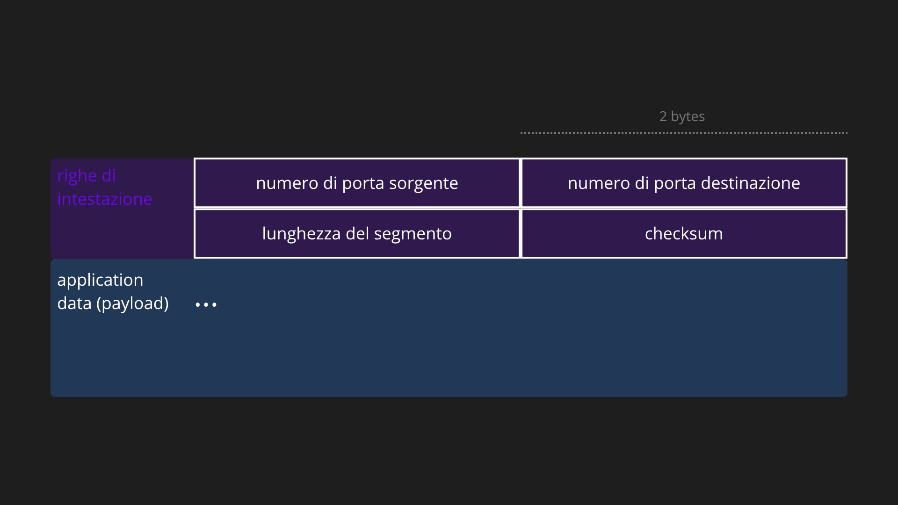
numeri di porta: identificano le socket mittente e destinatario
lunghezza del segmento: lunghezza totale del segmento in byte (header + dati)
checksum: usato per rilevare errori di trasmissione.
Internet checksum
Il checksum (somma di controllo) è un valore di 16 bit inserito nell’intestazione (header) di un pacchetto dati. Il suo scopo è permettere al destinatario di verificare se i dati sono stati corrotti durante il viaggio sulla rete. Viene scelto perché è estremamente veloce da calcolare via software, anche se non è il metodo più sicuro in assoluto.
Example
Supponiamo di dover inviare due blocchi di dati (Dato A e Dato B):
Il sistema operativo del mittente prepara il checksum da inserire nel datagramma. Innanzitutto somma i blocchi a 16 bit tra loro.
Per ottenere il Checksum vero e proprio, si invertono tutti i bit (0 diventa 1, 1 diventa 0):
Somma iniziale di A e di B: 1011 1011 1011 1100
Checksum corrispondente: 0100 0100 0100 0011
L’inversione serve a facilitare la verifica da parte del destinatario. Quando il pacchetto arriva a destinazione, il ricevente somma tutto: dati ricevuti + checksum ricevuto. Se i dati sono corretti, la somma di un numero e del suo inverso darà come risultato una sequenza di soli 1.
Se il risultato è 1111 1111 1111 1111, i dati sono accettati.
Se compare anche un solo 0, il pacchetto viene scartato perché corrotto.
Warning
Il checksum è una protezione debole perché si basa su una semplice somma aritmetica. Questo espone il sistema a tre problemi principali:
Errori compensativi: se un bit passa da 0 a 1 in un punto, e un altro bit passa da 1 a 0 altrove (cambiamento simmetrico), la somma totale non cambia. Il destinatario riceverà dati sbagliati ma il checksum risulterà comunque valido.
Ordine dei dati: la somma è commutativa (A+B=B+A). Se i blocchi di dati arrivano scambiati di ordine, il checksum non se ne accorge.
Inserimento di zeri: se vengono aggiunti dei blocchi composti solo da zeri, la somma non cambia e l’errore passa inosservato.
Multiplexing e Demultiplexing UDP
Vediamo come avvengono multiplexing e demultiplexing senza connessione a livello di trasporto. In UDP, una socket è identificata univocamente da una coppia:
indirizzo IP di destinazione
numero di porta di destinazione
Questo significa che due datagrammi provenienti da host o porte sorgente diversi, ma diretti allo stesso IP e alla stessa porta, vengono consegnati alla stessa socket e quindi allo stesso processo.
Come avviene il demultiplexing UDP
Il server non distingue da chi arriva il datagramma in base alla socket: quella informazione la recupera dal contenuto del segmento (tramite recvfrom()). Il numero di porta sorgente non serve per il demultiplexing, ma funge da indirizzo di ritorno: il server lo estrae dal datagramma ricevuto e lo usa come porta destinazione nella risposta. L’indirizzo di ritorno completo è quindi (IP sorgente + porta sorgente).
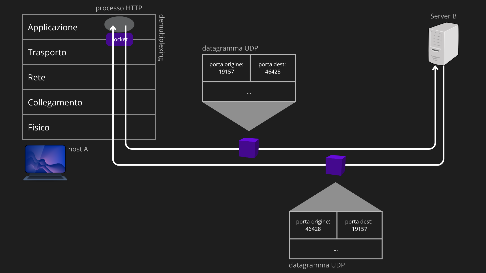
Example
Il processo nell’Host A con porta 19157 invia a Host B porta 46428. Il livello di trasporto di A costruisce il datagramma con:
porta sorgente: 19157
porta destinazione: 46428
All’arrivo, B esamina solo la porta destinazione (46428) e consegna il segmento alla socket corrispondente. Se B vuole rispondere, usa 19157 come porta destinazione.
Come avviene il multiplexing UDP
Quando più processi applicativi inviano dati contemporaneamente tramite socket UDP distinte, il livello di trasporto raccoglie tutti questi flussi in uscita ed esegue il multiplexing: per ciascuna socket preleva il payload, costruisce un segmento UDP aggiungendo l’header (porta sorgente,
porta destinazione, lunghezza, checksum) e passa il segmento risultante al livello di rete (IP) per l’instradamento.
N.B. Ogni segmento UDP è autonomo e indipendente: porta con sé tutte le informazioni di indirizzamento necessarie e non ha alcuna relazione con i segmenti precedenti o successivi della stessa socket. Non esiste uno stato di connessione che leghi i datagrammi tra loro.
Assegnazione delle porte
Lato client: la porta viene assegnata automaticamente dal sistema operativo (range da 1024 a 65535) al momento della creazione della socket, senza che il programmatore la specifichi.
Lato server: la porta viene assegnata esplicitamente dal programmatore tramite bind(), in modo che i client sappiano dove inviare i datagrammi. Se il server implementa un protocollo noto, deve usare la porta riservata corrispondente (es. DNS → 53).
Important
Le porte da 0 a 1023 sono riservate a protocolli noti (well-known ports) e non devono essere usate da applicazioni proprietarie. Alcuni esempi sono: la porta 25 per SMTP, la porta 53 per DNS, la porta 80 per HTTP e la porta 443 per HTTPS.
Comunicazione UDP
Per comprendere come UDP trasporta i dati, è utile seguire il percorso completo di un datagramma dal momento in cui il livello di trasporto lo riceve dal processo applicativo, fino alla sua consegna al destinatario. La programmazione pratica di questo scambio avviene tramite le socket UDP, l’interfaccia tra il livello applicativo e quello di trasporto.
Azioni del mittente
Quando il processo applicativo chiama sendto() sulla propria socket, il controllo passa al livello di trasporto che esegue le seguenti operazioni:
Riceve il messaggio dal livello applicativo tramite la socket
Aggiunge l’header UDP: imposta i quattro campi (porta sorgente, porta destinazione, lunghezza, checksum)
Calcola il checksum sull’intero segmento (header + dati + pseudo-header IP)
Crea il datagramma UDP (header + payload)
Passa il datagramma al livello di rete (IP) per l’instradamento verso l’host destinatario
N.B. Il numero di porta sorgente (quello del client) non viene scelto dal programmatore ma assegnato automaticamente dal sistema operativo. Solo la porta del server viene specificata esplicitamente tramite bind().
Azioni del destinatario
Quando un segmento UDP arriva all’host destinatario:
Riceve il datagramma da IP
Controlla il checksum: se il checksum non corrisponde, il datagramma viene scartato silenziosamente (UDP non invia notifiche di errore)
Demultiplexa il segmento: identifica la socket corretta tramite il numero di porta di destinazione
Consegna il payload al processo applicativo attraverso la socket, insieme all’indirizzo sorgente (IP + porta) che il processo potrà usare per rispondere
Warning
Se nessun processo è in ascolto sulla porta di destinazione, il sistema operativo scarta il datagramma e invia un messaggio ICMP di tipo “port unreachable” al mittente.
PROTOCOLLO TCP
Il TCP (Transmission Control Protocol) è il principale protocollo del livello di trasporto della suite Internet. Si distingue per la sua natura connection-oriented e per la capacità di trasformare un canale di rete intrinsecamente inaffidabile (come il livello IP) in un servizio di comunicazione robusto e ordinato.
Casi d’uso tipici: è usato dove l’integrità dei dati è fondamentale, ad esempio in protocolli come HTTP/1.1, HTTP/2, FTP, SMTP, ecc.
Caratteristiche fondamentali
Il funzionamento del TCP si basa su alcuni pilastri tecnici che garantiscono l’integrità della comunicazione tra due host:
Orientamento alla Connessione: La trasmissione dei dati è preceduta da una fase di sincronizzazione chiamata three-way handshake. Questo processo permette a client e server di concordare parametri fondamentali e stabilire lo stato della connessione.
Affidabilità e Integrità: Il protocollo garantisce che ogni byte inviato arrivi a destinazione senza errori, duplicazioni o perdite. Ciò avviene tramite l’uso ACK e meccanismi di ritrasmissione.
Consegna Ordinata: Anche se i pacchetti IP del livello d rete sottostante possono seguire percorsi diversi e arrivare fuori ordine, il TCP ricostruisce l’esatta sequenza originale basandosi sui numeri di sequenza inseriti nell’intestazione (header) dei segmenti TCP.
Punto a punto: La connessione avviene esclusivamente tra un singolo mittente e un singolo destinatario, Il TCP non gestisce comunicazioni multicast o broadcast.
Gestione End-to-End: Lo stato della connessione risiede unicamente negli host (sistemi periferici). I router e gli switch intermedi non sono consapevoli delle connessioni TCP e trattano i pacchetti come semplici datagrammi IP.
Full-Duplex: Il flusso di dati è bidirezionale e simultaneo tra i due processi comunicanti.
Buffer di Invio e Ricezione: Gli host utilizzano porzioni di memoria (buffer) per stoccare temporaneamente i dati. Il buffer di invio trattiene i dati finché non vengono confermati dal destinatario, mentre quello di ricezione ospita i segmenti in arrivo finché l’applicazione non è pronta a leggerli.
Formato dei segmenti TCP
Il segmento TCP è composto da due parti principali: un’intestazione, generalmente di 20 byte, e un campo dati, contenente i byte provenienti dall’applicazione del livello superiore. La dimensione massima del campo dati è regolata dalla Maximum Segment Size (MSS): nel caso di file di grandi dimensioni, TCP frammenta i dati in blocchi di dimensione pari all’MSS, ad eccezione dell’ultimo segmento, che risulta generalmente più piccolo.
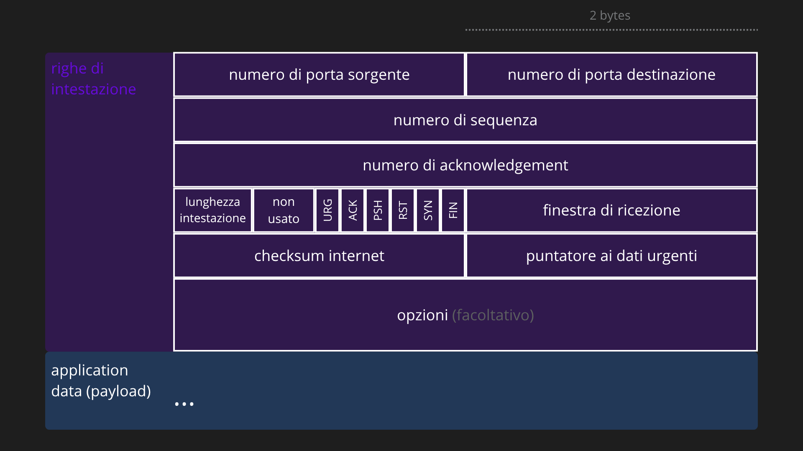
numeri di porta: identificano le socket mittente e destinatario
lunghezza del segmento: lunghezza totale del segmento in byte (header + dati)
numero di sequenza e numero di acknowledgment: il numero di sequenza identifica il primo byte del campo dati all’interno del flusso di byte complessivo, mentre il numero di acknowledgment indica il prossimo byte atteso dal mittente, realizzando un sistema di acknowledgment cumulativo.
lunghezza dell’intestazione: campo a 4 bit che specifica la lunghezza dell’intestazione TCP in multipli di 32 bit. Il valore tipico è 20 byte, ma può variare in presenza del campo opzioni.
campo delle flag: composto da 6 bit, ciascuno con una funzione specifica: ACK: indica che il campo di acknowledgment contiene un valore valido, RST, SYN, FIN: utilizzati per la gestione dell’apertura e della chiusura della connessione, PSH: segnala al destinatario di consegnare immediatamente i dati al livello superiore, URG: indica la presenza di dati urgenti, la cui posizione è segnalata dal campo puntatore ai dati urgenti (16 bit).
finestra di ricezione: indica il numero di byte che il destinatario è disposto ad accettare in un dato momento.
checksum: usato per rilevare errori di trasmissione.
opzioni: campo facoltativo e di lunghezza variabile, impiegato per negoziare parametri quali la MSS, il fattore di scala della finestra nelle reti ad alta velocità e il time-stamping.
Multiplexing e Demultiplexing TCP
Vediamo come avvengono multiplexing e demultiplexing con connessione a livello di trasporto. A differenza di UDP, in TCP una socket è identificata univocamente da una quaterna:
indirizzo IP sorgente
numero di porta sorgente
indirizzo IP destinazione
numero di porta destinazione
Questo significa che due segmenti TCP in arrivo con la stessa porta destinazione ma con IP sorgente o porta sorgente diversi vengono diretti a socket distinte, e quindi a processi (o thread) distinti. È proprio questo meccanismo che permette al server di gestire connessioni simultanee
da client diversi.
Come avviene il demultiplexing TCP
Quando il server riceve un segmento TCP, il livello di trasporto esamina tutti e quattro i valori della quaterna e individua la socket di connessione corrispondente. Esiste però un caso speciale: i segmenti che trasportano la richiesta iniziale di connessione (bit SYN = 1) vengono diretti alla socket di benvenuto (serverSocket), che è sempre in ascolto sulla porta nota del server. Una volta completato l’handshake a tre vie attraverso la socket di benvenuto, il server crea una nuova connectionSocket identificata dalla quaterna, e tutti i segmenti successivi di quella connessione vengono diretti esclusivamente a quella socket.
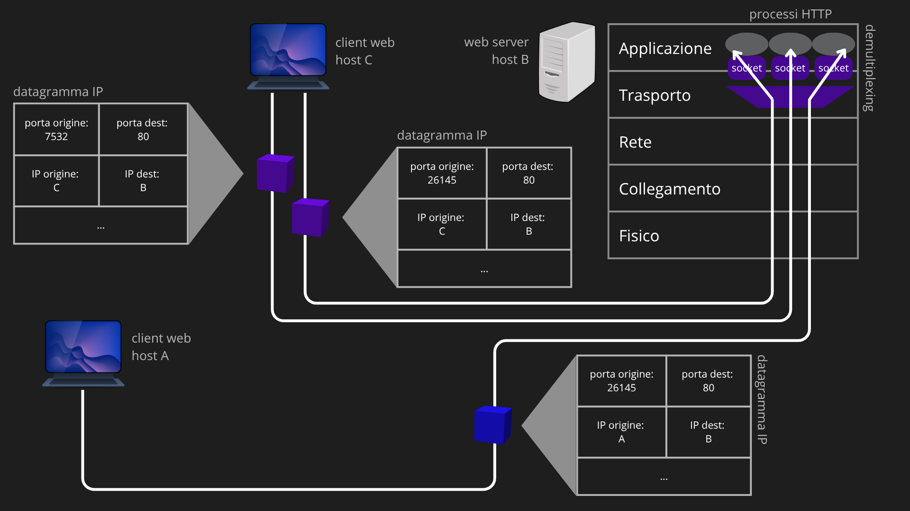
Example
L’Host C apre due connessioni HTTP verso il server B (porta 80), usando le porte sorgente 26145 e 7532. L’Host A apre anch’esso una connessione verso B usando la porta sorgente 26145. Nonostante A e C usino la stessa porta sorgente (26145), il server B le distingue senza ambiguità tramite l’indirizzo IP sorgente, che è diverso. Risultato: tre socket di connessione distinte, tutte con porta destinazione 80.
Come avviene il multiplexing TCP
In TCP il multiplexing funziona allo stesso modo concettuale di UDP, ma con una differenza sostanziale: i dati in uscita non sono pacchetti autonomi ma fanno parte di flussi di byte appartenenti a connessioni stabilite. Per ciascuna connectionSocket attiva, il livello di
trasporto raccoglie i byte in uscita, li impacchetta in segmenti TCP aggiungendo l’header completo (inclusa la quaterna di indirizzamento, numero di sequenza, numero di acknowledgment, ecc.) e li passa al livello di rete.
N.B. Poiché ogni connessione TCP è identificata dalla sua quaterna univoca, il livello di trasporto sa esattamente quali valori inserire nell’header di ciascun segmento in uscita, garantendo che il destinatario possa effettuare il demultiplexing corretto all’arrivo.
Assegnazione delle porte
Lato client: la porta sorgente viene assegnata automaticamente dal sistema operativo al momento di connect(), senza che il programmatore la specifichi.
Lato server: la porta viene assegnata esplicitamente tramite bind() prima di listen(). La socket di benvenuto rimane fissa su quella porta. Le socket di connessione create da accept() ereditano la stessa porta destinazione ma sono identificate dalla quaterna completa.
Important
Le porte da 0 a 1023 sono riservate a protocolli noti (well-known ports) e non devono essere usate da applicazioni proprietarie. Alcuni esempi sono: la porta 25 per SMTP, la porta 53 per DNS, la porta 80 per HTTP e la porta 443 per HTTPS.
Trasferimento dati affidabile in TCP
Il servizio IP sottostante a TCP è intrinsecamente inaffidabile: non garantisce la consegna ordinata né l’integrità dei datagrammi, che possono andare persi, arrivare in ordine casuale o con bit alterati. TCP ha il compito di costruire, al di sopra di questo servizio best-effort, un servizio di trasporto affidabile che garantisca al processo ricevente un flusso di byte privo di alterazioni, buchi, duplicazioni e fuori sequenza.
Numeri di sequenza e di acknowledgment
TCP tratta il flusso di dati come una sequenza ordinata di byte, non come una serie di segmenti distinti. Il numero di sequenza di ciascun segmento corrisponde pertanto alla posizione del primo byte trasportato all’interno del flusso complessivo.
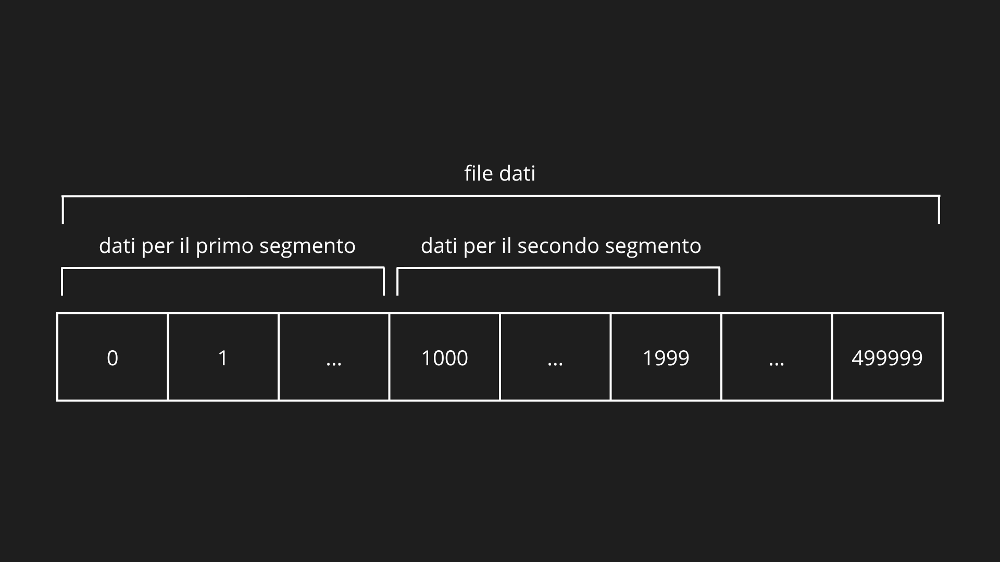
Example
Considerando un file da 500.000 byte con MSS di 1000 byte, TCP produce 500 segmenti: al primo viene assegnato il numero di sequenza 0, al secondo 1000, al terzo 2000, e così via.
Inoltre, poiché il TCP è full-duplex, ogni host inserisce nei segmenti inviati il numero di acknowledgment: il numero di sequenza del prossimo byte che si aspetta di ricevere dall’altro lato della connessione. Il meccanismo di riscontro del TCP eredita e ottimizza i concetti teorici dei protocolli a finestra scorrevole:
Natura cumulativa(simile a Go-Back-N): il TCP utilizza un acknowledgment cumulativo dove viene riscontrato solo l’ultimo byte ricevuto in modo contiguo. Se un destinatario riceve i byte 0-999 e poi i byte 2.000-2.999 (perdendo il segmento intermedio), l’ACK continuerà a indicare 1.000. Come nel GBN, il mittente tiene traccia solo di SendBase e del prossimo byte da inviare, ma a differenza di quest’ultimo, TCP non ritrasmette necessariamente i segmenti successivi se un ACK cumulativo ne copre la ricezione.
Gestione del fuori ordine (simile a Selective Repeat): i segmenti che arrivano correttamente ma fuori ordine vengono bufferizzati (memorizzati) invece che scartati. Questo rende il recupero degli errori un ibrido tra GBN e SR, poiché evita di ritrasmettere dati già presenti nel buffer del destinatario, ottimizzando l’uso della banda.
Estensione SACK (Selective Acknowledgment): tramite questa opzione (RFC 2018), il TCP può avvicinarsi ulteriormente al comportamento di un protocollo SR puro. Il destinatario notifica esplicitamente al mittente quali blocchi “isolati” ha ricevuto correttamente, permettendo di ritrasmettere solo i segmenti effettivamente mancanti anziché ripartire dal SendBase.
Attention
I numeri di sequenza iniziali in TCP (Initial Sequence Number - ISN) non partono da zero, ma vengono scelti in modo casuale da entrambi gli host durante il handshake. Questa misura di sicurezza previene due problemi: l’intercettazione e la predizione dei pacchetti da parte di esterni (TCP Sequence Prediction Attack) e il rischio che segmenti ritardatari di una vecchia connessione, ancora circolanti in rete, vengano erroneamente accettati come parte di una nuova sessione tra gli stessi host.
Esempio con Telnet
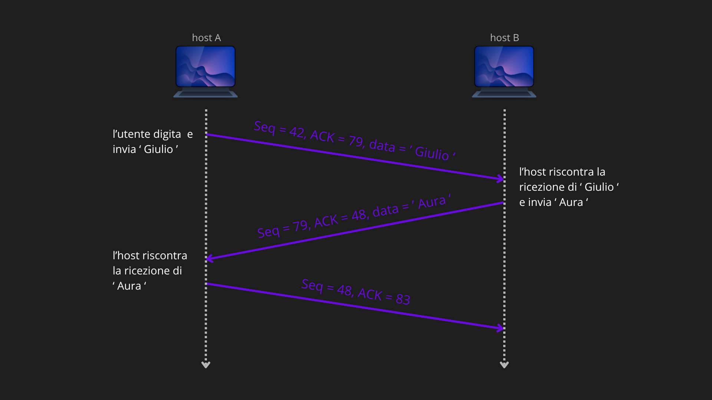
Example
Analizziamo il funzionamento dei numeri di sequenza e di acknowledgment attraverso un esempio pratico con Telnet. Supponendo che il client (Host A) abbia numero di sequenza iniziale (ISN) 42 e il server (Host B) 79, lo scambio si articola in tre segmenti:
Client → Server: il client invia la parola ‘Giulio’ con Seq=42 e ACK=79, indicando di attendere il byte 79 dal server.
Server → Client: il server invia ‘Aura’ con Seq=79 e ACK=48, confermando la ricezione del byte 42 e richiedendo il 48 (42 + 6 byte di ‘Giulio’). In questo segmento l’acknowledgment è trasportato insieme ai dati, tecnica definita piggybacking.
Client → Server: il client invia un segmento privo di dati con Seq=48 e ACK=83, confermando la ricezione della parola ‘Aura’ e attestando di attendere il byte 83.
Questo esempio evidenzia come TCP gestisca in modo elegante la bidirezionalità del flusso, combinando dati e acknowledgment all’interno degli stessi segmenti ogni volta che ciò sia possibile.
Timeout e stima dell’RTT
TCP, analogamente al protocollo rdt, si avvale di un meccanismo di timeout e ritrasmissione per recuperare i segmenti persi durante la trasmissione. Sebbene il principio sia concettualmente semplice, la sua implementazione pratica solleva alcune questioni fondamentali: come stimare correttamente il tempo di andata e ritorno (RTT), quale durata assegnare all’intervallo di timeout e se associare un timer a ogni singolo segmento non ancora riscontrato.
Stima dell’RTT
Il punto di partenza per la gestione del timeout è la misurazione del cosiddetto SampleRTT, ovvero il tempo che intercorre tra l’invio di un segmento e la ricezione del relativo acknowledgment. Per ragioni di efficienza, la maggior parte delle implementazioni TCP non misura un SampleRTT per ogni segmento trasmesso, bensì mantiene attiva una sola misurazione per volta, ottenendo approssimativamente un nuovo campione per ogni RTT trascorso. È importante sottolineare che TCP non calcola mai il SampleRTT per i segmenti ritrasmessi, ma esclusivamente per quelli inviati una sola volta. Poiché i singoli campioni possono risultare atipici a causa della congestione nei router e del variabile carico sui sistemi periferici, TCP calcola una media ponderata denominata EstimatedRTT, aggiornata secondo la seguente formula:
Questa formula realizza una media mobile esponenziale ponderata (EWMA): i campioni più recenti ricevono un peso proporzionalmente maggiore rispetto a quelli più vecchi, poiché riflettono in modo più accurato le condizioni attuali della rete. Il termine esponenziale indica che il peso attribuito ai campioni passati decresce esponenzialmente a ogni aggiornamento.
Stima della variabilità dell’RTT
Oltre alla stima del valore medio, TCP necessita di una misura della variabilità dell’RTT, definita come DevRTT e calcolata anch’essa come EWMA, secondo la formula:
DevRTT rappresenta quindi la deviazione media tra i campioni misurati e il valore stimato. Quando le fluttuazioni di SampleRTT sono contenute, DevRTT assume valori piccoli. Al contrario, in presenza di variazioni significative, DevRTT risulta elevato. Il valore suggerito per β è 0,25.
Impostazione e gestione dell’intervallo di timeout
Sulla base dei valori di EstimatedRTT e DevRTT, TCP determina l’intervallo di timeout di ritrasmissione (TimeoutInterval) secondo la formula:
TimeoutInterval = EstimatedRTT + 4 × DevRTT
Questa formula risponde a un preciso criterio di bilanciamento: il timeout non può essere inferiore a EstimatedRTT, poiché ciò genererebbe ritrasmissioni inutili, ma non deve nemmeno essere eccessivamente superiore, per evitare ritardi significativi nel recupero dei segmenti perduti. Il contributo di DevRTT, moltiplicato per 4, funge da margine di sicurezza adattivo: è ampio quando le fluttuazioni sono elevate e ridotto quando il flusso è stabile. RFC 6298 raccomanda un valore iniziale di TimeoutInterval pari a 1 secondo. In caso di timeout, l’intervallo viene raddoppiato, così da evitare scadenze premature relative a segmenti successivi per i quali l’acknowledgment potrebbe arrivare a breve. Non appena un nuovo segmento viene riscontrato e EstimatedRTT viene aggiornato, TimeoutInterval viene ricalcolato secondo la formula sopra indicata, riadattandosi dinamicamente alle condizioni correnti della rete.
Gestione della perdita: timeout e ritrasmissione
Stabiliti i meccanismi di numerazione e riscontro dei dati e le modalità di stima dell’RTT, occorre affrontare il problema centrale del trasferimento affidabile: come reagire quando un segmento non raggiunge la destinazione. TCP si avvale di timeout e ritrasmissioni rapida che, combinate tra loro, consentono di rilevare e recuperare le perdite in modo efficiente, minimizzando sia le ritrasmissioni inutili sia i ritardi end-to-end.
Struttura del mittente TCP semplificato
Per raggiungere questo obiettivo, TCP gestisce tre eventi principali legati alla trasmissione e ritrasmissione dei dati.
Il primo evento si verifica quando i dati provengono dall’applicazione: TCP incapsula i dati in un segmento, assegna il numero di sequenza corrispondente al primo byte del segmento nel flusso complessivo, avvia il timer se non è già attivo e passa il segmento al livello IP. Il timer è concettualmente associato al segmento più vecchio ancora privo di acknowledgment, e il suo intervallo di scadenza è il TimeoutInterval calcolato a partire da EstimatedRTT e DevRTT.
Il secondo evento è la scadenza del timer (timeout): TCP ritrasmette il segmento con il numero di sequenza più basso tra quelli privi di acknowledgment e riavvia il timer.
Il terzo evento è la ricezione di un ACK con valore y valido: TCP confronta y con la variabile SendBase, che rappresenta il numero di sequenza del byte più vecchio ancora privo di riscontro (ACK). Se y è maggiore di SendBase, significa che il destinatario ha ricevuto tutti i segmenti tra SendBase e y, SendBase viene aggiornato quindi a y e, se esistono ancora segmenti (dopo y) senza acknowledgment, il timer viene riavviato.
Scenari esemplificativi
Chiariamo il funzionamento del meccanismo attraverso 3 diversi scenari:
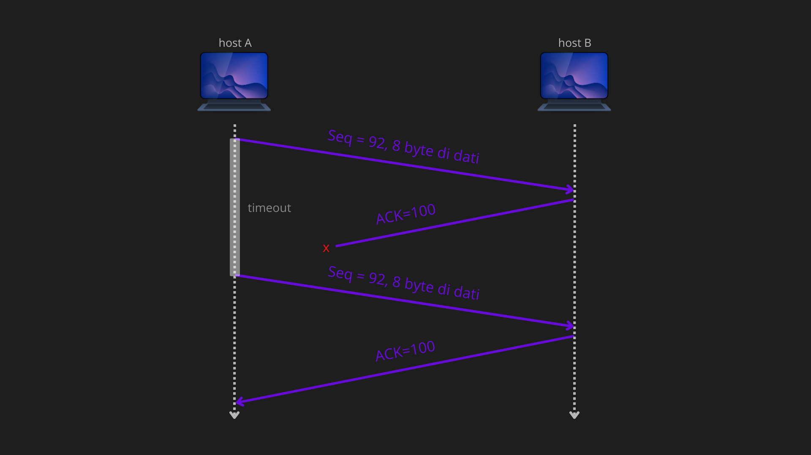
Nel primo scenario, il segmento inviato da A viene ricevuto correttamente da B, ma l’ACK di ritorno si perde in rete. Alla scadenza del timer, A ritrasmette il segmento. L’host B, riconoscendo dal numero di sequenza che i dati erano già stati ricevuti, scarta silenziosamente il duplicato.
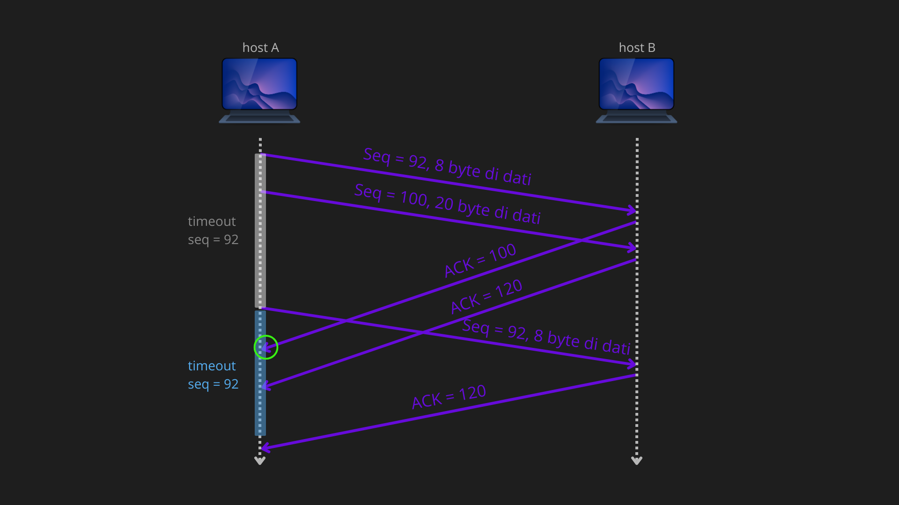
Nel secondo scenario, A invia due segmenti consecutivi. Entrambi giungono a B, che risponde con due ACK distinti. Tuttavia, nessuno dei due raggiunge A prima del timeout. Alla scadenza, A ritrasmette solo il primo segmento. Il secondo non viene ritrasmesso poiché il suo ACK potrebbe arrivare prima del nuovo timeout, grazie alla natura cumulativa degli acknowledgment.
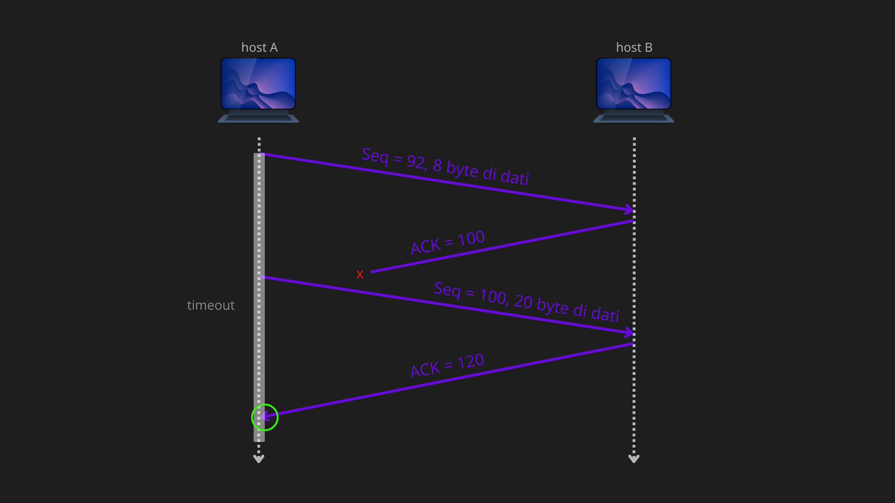
Nel terzo scenario, l’ACK del primo segmento va perduto, ma prima che il timer scada A riceve un ACK cumulativo con numero 120, che attesta la ricezione corretta di tutti i byte fino al 119. In questo caso nessuno dei due segmenti viene ritrasmesso, dimostrando l’efficienza del meccanismo di acknowledgment cumulativo.
Ritrasmissione rapida (fast retransmit)
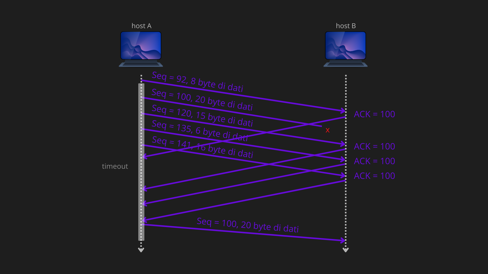
Un limite del solo meccanismo di timeout è che il periodo di attesa può risultare relativamente lungo, aumentando il ritardo end-to-end in caso di perdita di segmenti. TCP risolve questo problema attraverso la ritrasmissione rapida, basata sul rilevamento di ACK duplicati. Quando il destinatario riceve un segmento con numero di sequenza superiore a quello atteso, rileva un buco nel flusso e reagisce inviando immediatamente un ACK duplicato per l’ultimo byte ricevuto in ordine. Il mittente, ricevendo tre ACK duplicati per lo stesso segmento, interpreta questo segnale come indice quasi certo della perdita del segmento immediatamente successivo e procede alla sua ritrasmissione prima ancora che il timer scada. La soglia di tre ACK duplicati è scelta per distinguere la perdita effettiva dal semplice riordinamento dei segmenti in rete.
Controllo del flusso
Il controllo di flusso (flow-control service) è un meccanismo offerto da TCP per impedire che il mittente saturi il buffer di ricezione del destinatario inviando dati a una velocità superiore a quella con cui l’applicazione ricevente è in grado di leggerli. Si tratta di un servizio di confronto tra la frequenza di invio del mittente e la frequenza di lettura del ricevente.
Caution
È importante distinguere il controllo di flusso dal controllo di congestione: sebbene entrambi comportino il rallentamento del mittente, il primo è causato dalla limitata capacità del buffer del destinatario, il secondo dalla congestione nella rete IP.
Buffer di ricezione
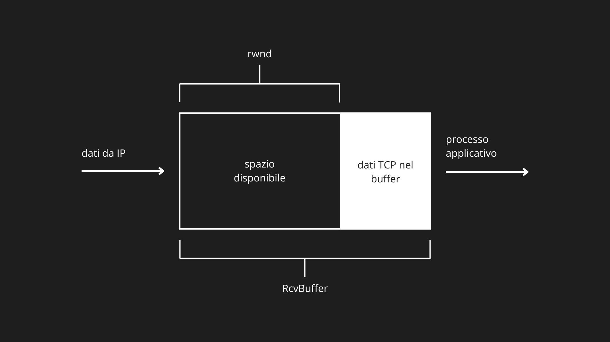
Ogni host coinvolto in una connessione TCP alloca un buffer di ricezione di dimensione RcvBuffer. Per garantire che questo buffer non vada in overflow, deve essere sempre rispettata la condizione:
LastByteRcvd - LastByteRead ≤ RcvBuffer. La quantità di spazio libero disponibile nel buffer è espressa dalla finestra di ricezione (rwnd), definita come: rwnd = RcvBuffer − [LastByteRcvd − LastByteRead]. Essendo lo spazio disponibile variabile nel tempo, rwnd è una grandezza dinamica.
Funzionamento
Il destinatario comunica il valore corrente di rwnd al mittente scrivendolo nell’apposito campo di ogni segmento inviato. Il mittente, a sua volta, mantiene traccia di due variabili:
La differenza tra queste due variabili rappresenta la quantità di dati trasmessi ma non ancora confermati. Per non mandare in overflow il buffer del ricevente, il mittente deve rispettare per tutta la durata della connessione il vincolo: LastByteSent − LastByteAcked ≤ rwnd.
Gestione della connessione TCP
Diamo un’occhiata più approfondita a come viene stabilita e rilasciata una connessione TCP:
Apertura della connessione: handshake a tre vie
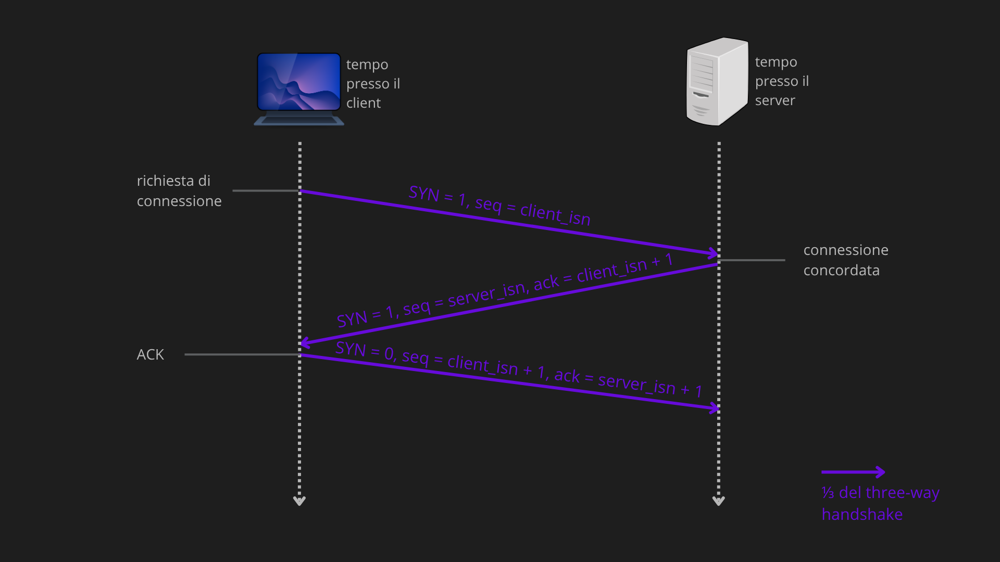
La procedura di apertura di una connessione TCP prevede lo scambio di tre segmenti tra client e server (che compongono l’handshake a tre vie):
Segmento SYN: (client → server) Il client invia un segmento speciale privo di dati applicativi con il bit SYN = 1 e un numero di sequenza iniziale scelto casualmente (client_isn) nel campo apposito (SYN sta per synchronize).
Segmento SYNACK: (server → client) Il server riceve il SYN, alloca buffer e variabili TCP per la connessione, e risponde con un segmento detto SYNACK, caratterizzato da: campo SYN = 1, campo ACK = client_isn + 1 e proprio numero di sequenza iniziale (server_isn).
Conferma finale: (client → server) Il client alloca buffer e variabili, e invia un terzo segmento con: SYN = 0 (connessione già stabilita) e ACK = server_isn + 1.
Il campo dati di questo terzo segmento può già contenere dati applicativi. Al termine dei tre passi la connessione è pienamente operativa e i successivi segmenti avranno sempre SYN = 0.
Chiusura della connessione
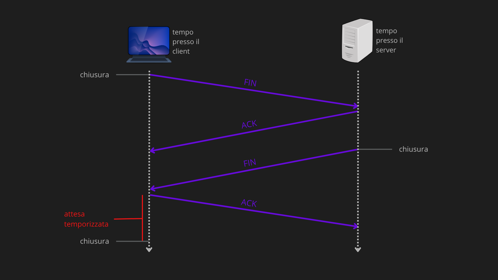
Ciascuno dei due host può avviare la chiusura della connessione, con conseguente de-allocazione di buffer e variabili. La sequenza tipica, con chiusura iniziata dal client, è la seguente:
Il client invia un segmento con FIN = 1 al server (FIN sta per finish).
Il server invia un ACK in risposta.
Il server invia a sua volta un segmento con FIN = 1.
Il client risponde con un ACK finale ed entra in uno stato di attesa temporizzata (TIME_WAIT) prima di rilasciare le risorse.
Stati TCP del client
La sequenza degli stati visitati dal lato client durante l’intero ciclo di vita della connessione:
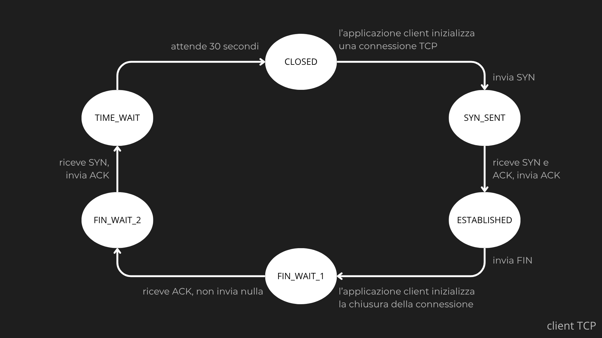
Lo stato TIME_WAIT garantisce che l’ultimo ACK, se perso, possa essere ritrasmesso. Al suo termine, le risorse (inclusi i numeri di porta) vengono rilasciate.
Stati TCP del server
La sequenza degli stati visitati dal lato server:
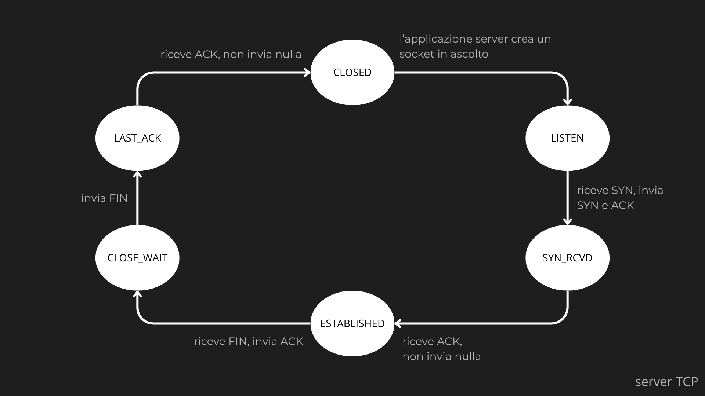
Important
Quando un host riceve un segmento TCP destinato a una porta su cui non è attiva alcuna socket, risponde con un segmento di reset (RST = 1), comunicando alla sorgente che non esiste una socket corrispondente. In modo analogo, UDP risponde con un datagramma ICMP in caso di porta di destinazione non attiva.
Scansione delle Porte con nmap
Lo strumento nmap sfrutta i meccanismi di gestione della connessione TCP per rilevare lo stato delle porte di un host remoto. Inviando un segmento SYN alla porta bersaglio, interpreta la risposta come segue:
SYNACK ricevuto: porta aperta (applicazione in ascolto)
RST ricevuto: porta chiusa (nessuna applicazione, ma host raggiungibile)
Nessuna risposta: porta probabilmente bloccata da firewall
Nmap è inoltre in grado di rilevare porte UDP aperte, configurazioni di firewall e versioni di sistemi operativi e applicazioni, sfruttando la manipolazione dei segmenti di gestione TCP.
Controllo di congestione TCP
TCP adotta un approccio di controllo di congestione end-to-end, senza alcun supporto esplicito dal livello di rete. Il meccanismo si basa su una variabile aggiuntiva mantenuta dal mittente: la finestra di congestione (cwnd), che limita la quantità di dati trasmessi ma non ancora riscontrati secondo il vincolo: LastByteSent - LastByteAcked ≤ min(cwnd, rwnd). La velocità di trasmissione risultante è approssimativamente cwnd/RTT byte/s. I mittenti TCP determinano la loro velocità di trasmissione in modo da non congestionare la rete e allo stesso tempo utilizzare tutta la banda disponibile. Questo è possibile grazie ad un algoritmo che funziona sulla base di tre principi:
Un evento di perdita di un segmento, ovvero un timeout o la ricezione di tre ACK duplicati, implica congestione e quindi riduzione del tasso trasmissivo.
Un ACK non duplicato indica che la rete sta consegnando i segmenti del mittente al ricevente e quindi il tasso di trasmissione del mittente può essere aumentato (stato buono della rete).
Rilevamento continuo della larghezza di banda, aumentando progressivamente la velocità fino al rilevamento della congestione, per poi ridurla e riprendere la fase di sondaggio.
TCP è pertanto definito auto-temporizzato (self-clocking), poiché sono gli stessi acknowledgment a scandire la crescita della finestra. L’algoritmo di congestione di TCP Reno è diviso in tre fasi:
Important
TCP Reno è una delle versioni più classiche del protocollo TCP e basa il suo funzionamento in fase di congestion avoidance (prevenzione della congestione) sull’algoritmo AIMD (Additive Increase, Multiplicative Decrease). L’obiettivo di questo meccanismo è esplorare la banda disponibile in modo cauto ma costante (+ 1 MSS ogni RTT), reagendo però drasticamente ai segnali di congestione per evitare il collasso della rete (- cwnd/2).
Slow Start
All’inizio di ogni connessione TCP, cwnd viene inizializzata a 1 MSS. Nonostante il nome, la fase di slow start è caratterizzata da una crescita esponenziale: per ogni segmento riscontrato (ACK), cwnd viene incrementata di 1 MSS, con il risultato di un raddoppio della finestra a ogni RTT. La sequenza è quindi la seguente: viene inviato 1 segmento, poi 2, poi 4, e così via.
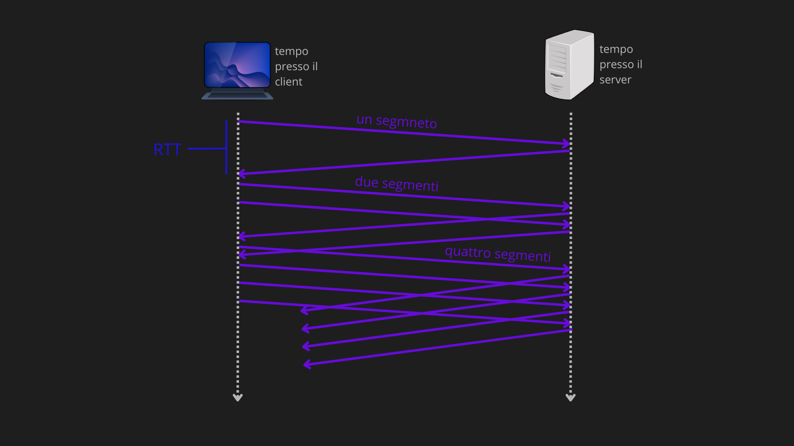
La fase di slow start termina in uno dei tre modi seguenti:
In caso di timeout: cwnd viene riportata a 1 MSS e ssthresh (soglia di slow start) viene impostata a cwnd/2 (metà del valore che aveva la finestra di congestione quando la congestione è stata rilevata).
In caso di raggiungimento di ssthresh: quando cwnd ≥ ssthresh, TCP passa alla fase di congestion avoidance. Infatti, sotto la soglia ssthresh, la crescita di cwnd deve essere esponenziale per occupare rapidamente la banda libera. Invece, oltrepassata la soglia, la crescita deve diventare lineare per sondare con cautela il limite della rete senza intasarla.
In caso di ricezione di tre ACK duplicati (perdita di segmento): come prima cosa TCP opera una ritrasmissione rapida e poi entra nella fase di fast recovery.
Congestion Avoidance
In questa fase, il TCP è vicino al limite della capacità di rete e adotta un approccio conservativo. La crescita diventa lineare: la cwnd aumenta di solo 1 MSS per ogni RTT completo (ovvero aumenta di una piccola frazione per ogni ACK ricevuto).
In caso di timeout: la soglia ssthresh viene dimezzata e la cwnd torna a 1 MSS, ritornando quindi in fase di slow start.
In caso di tre ACK duplicati: la reazione è moderata. La cwnd viene dimezzata (aggiungendo 3 MSS di bonus per gli ACK già ricevuti), si aggiorna la soglia ssthresh a cwnd/2 e si entra nella fase di fast recovery.
Fast Recovery
Questa fase serve a gestire perdite isolate senza abbattere le prestazioni della rete. La finestra continua a fluttuare leggermente mentre si aspetta la conferma del pacchetto perso.
Se arrivano altri ACK duplicati: la cwnd aumenta di 1 MSS per ogni duplicato, poiché ogni ACK è un segnale che un pacchetto ha lasciato la rete ed è arrivato a destinazione.
Se arriva il “new ACK” (non duplicato): la fase termina. La cwnd si sgonfia e si assesta al valore di ssthresh, proseguendo in fase di congestion avoidance.
In caso di timeout: il meccanismo fallisce e si torna drasticamente a slow start con cwnd = 1.
Esempio
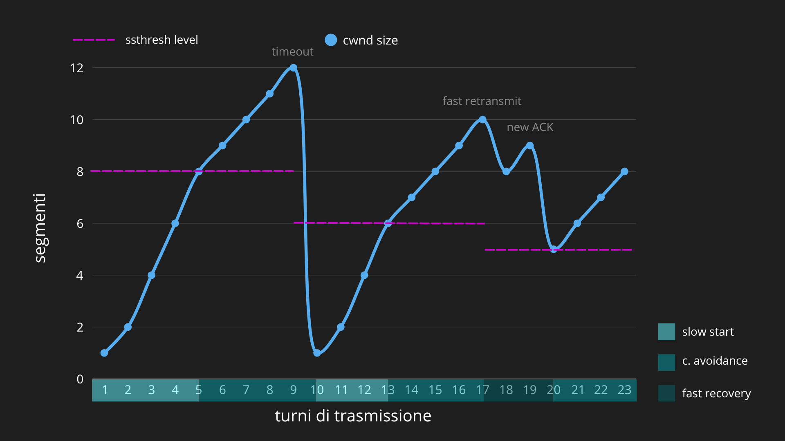
Example
Il grafico mostra l’evoluzione di una connessione TCP Reno:
All’inizio (turni 1 - 5), vediamo la slow start che sale rapidamente fino alla ssthresh (8).
Superata la soglia (turni 5 - 9), la pendenza cala: siamo in congestion avoidance.
Al turno 9 si verifica un timeout (forse un cavo scollegato o un router completamente intasato). La finestra crolla immediatamente a 1 e la soglia di sicurezza viene abbassata a 6 (la metà del valore 12 raggiunto).
Il mittente riparte quindi con pazienza (turni 10 - 17): risale esponenzialmente fino a 6 e poi linearmente.
Al turno 17, però, accade qualcosa di diverso: non un timeout, ma la ricezione di 3 ACK duplicati (fast retransmit). Il TCP capisce che la rete non è morta, ma ha solo perso un pezzo. Invece di crollare a 1, la soglia viene portata a 5 (metà di 10) e la finestra scende a 8 (5 + 3), siamo in fase di fast recovery.
Nel grafico vedi che tra il turno 18 e 19 la linea ha un piccolo sbalzo verso l’alto: sono gli ACK duplicati extra che gonfiano la finestra.
Infine, al turno 20 arriva il new ACK: il “buco” è tappato. La finestra si riassesta sulla ssthresh ricalcolata (5) e la trasmissione prosegue linearmente, evitando di dover ricominciare da capo come era successo al turno 10.
Fairness (equità)
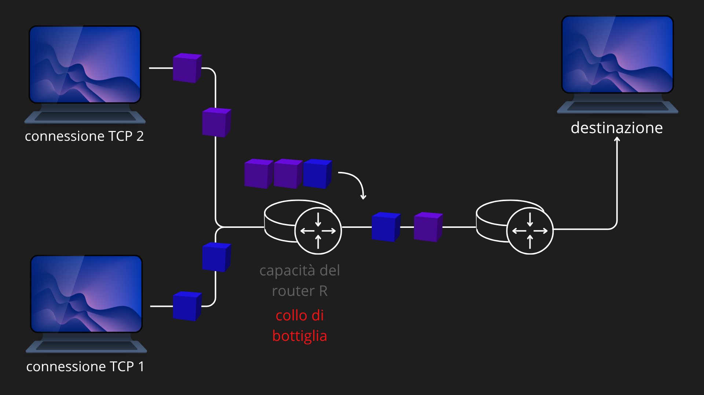
Il concetto di fairness (equità) si riferisce alla capacità di un protocollo di distribuire equamente le risorse di rete tra diverse connessioni. Se K connessioni TCP condividono un unico collegamento collo di bottiglia con capacità R, il meccanismo è considerato equo se ogni connessione ottiene mediamente una velocità di trasmissione pari a R/K.
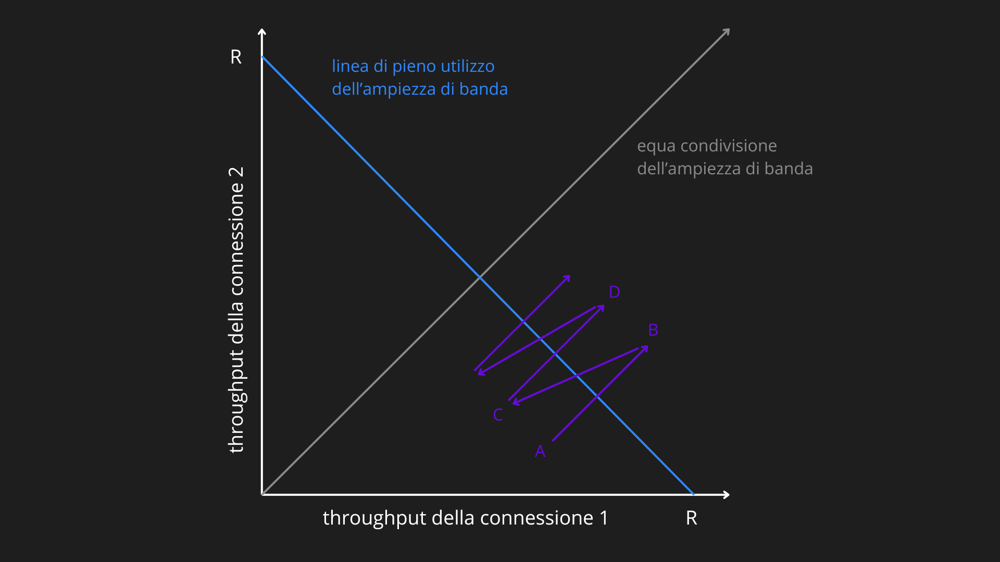
Il meccanismo AIMD è fair?
Rispondiamo utilizzando un grafico che memorizza ad ogni istante il throughput di due connessioni TCP sullo stesso cavo:
Asse delle ascisse x : throughput della connessione 1.
Asse delle ordinate y : throughput della connessione 2.
Linea di pieno utilizzo x + y = R : rappresenta il vincolo di capacità del collegamento. Qualsiasi punto sopra questa linea indica uno stato di congestione con conseguente perdita di pacchetti.
Linea di equa condivisione x = y : rappresenta la condizione ideale in cui entrambe le connessioni ottengono esattamente la stessa porzione di banda (R/2).
Comportamento del sistema:
Fase A → B : incremento additivo: partendo dal punto A, notiamo che la connessione 1 è più veloce della 2 (più a destra che in alto nel grafico). Poiché siamo sotto la linea di pieno utilizzo, entrambe le connessioni aumentano la velocità della stessa quantità (1 MSS ogni RTT). Graficamente, ci si sposta con un angolo di 45 gradi. Poiché l’incremento è identico per entrambe (+1), la pendenza della retta è pari a 1.
Fase B → C : decremento moltiplicativo: al punto B, la somma dei throughput supera la capacità R (linea azzurra). TCP rileva la perdita e dimezza le finestre di congestione (cwnd = cwnd/2). Graficamente, ci spostiamo verso l’origine (0,0). Poiché il taglio è percentuale (50%), la connessione 1 (più veloce) subisce una riduzione assoluta maggiore rispetto alla connessione 2. Questo punisce chi occupa più spazio, riducendo il divario tra le due.
Fase C → D e oltre : convergenza: dal punto C, le connessioni ricominciano a crescere a 45 gradi verso il punto D. Ogni volta che il sistema tocca il limite della banda e dimezza, il salto indietro sposta il punto di lavoro sempre più vicino alla linea di equa condivisione (la bisettrice). Nel tempo, i throughput delle due connessioni oscilleranno attorno al punto di equilibrio ideale, garantendo una spartizione equa delle risorse.